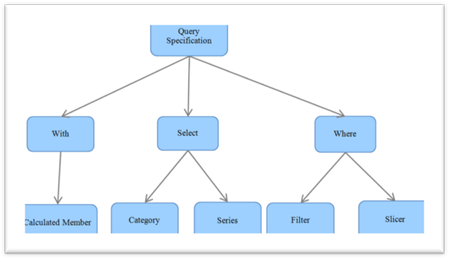

MDXQuerySpecification is the base for query creation. The MDXQuerySpecification will categorize the element into three clauses namely:
· With
· Select and
· Where
The elements in the given report are iterated and stored according to the specification.
· The calculated member element in the given report will be added under the With clause.
· The categorical and series items in the given report’s categorical elements and series element will come in the Select category.
· The Slicer and Filter items will comes under the Where category.
Based on the current report, the TogglePivot value and the axis position of each item will be assigned before it is stored in the appropriate clauses.

Figure 8: MDXQuerySpecification
Once the query specification is created, the GenerateQueryEx() method of QueryBuilderEngine was called by passing the created MDXQuerySpecification to generate the query.